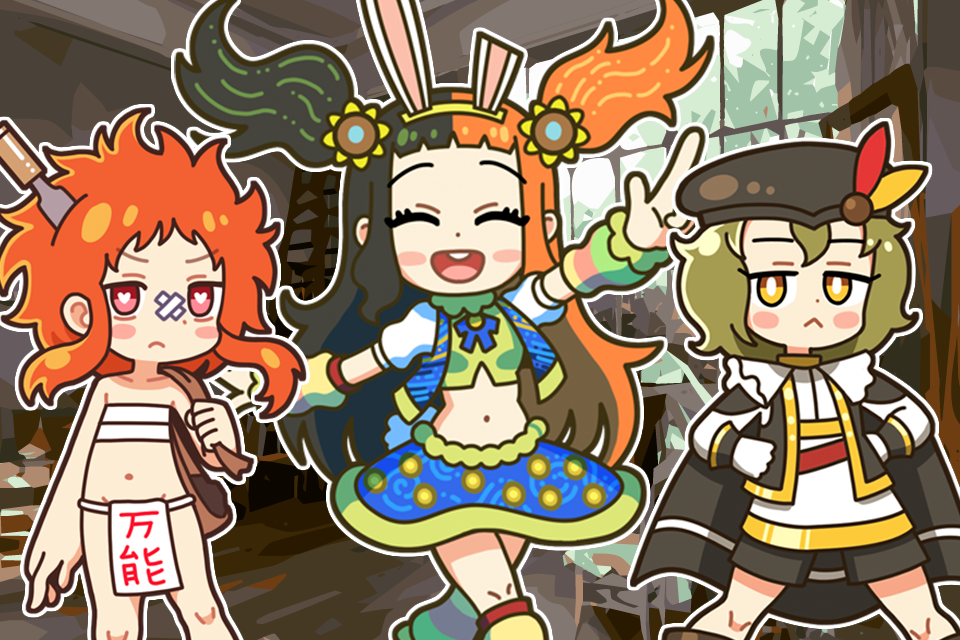
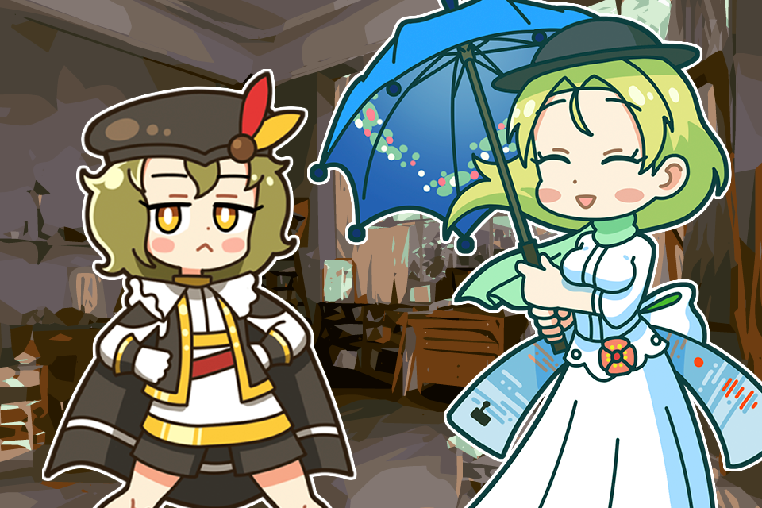
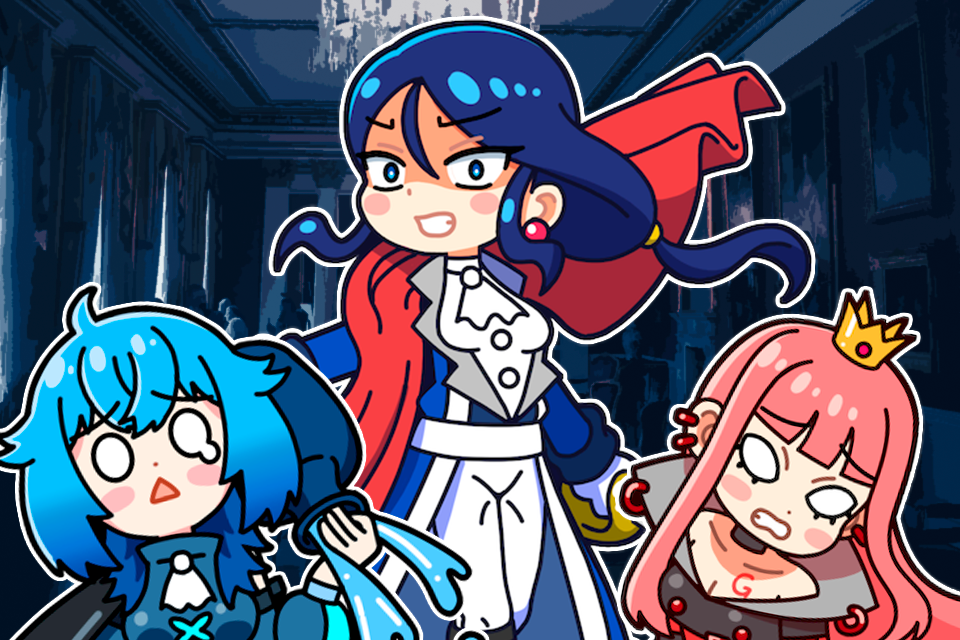

Renaissance Girls Theater
A collection of short visual novels
featuring the everyday lives of the Muses.
・Click a thumbnail to launch a theater.
・Available in Japanese and English.
・Playable on PC and smartphones (PC recommended).
・Includes voice acting and sound effects.
・An internet connection is required.
Please note that audio and video files
will be downloaded during theaterplay.
・On the PC version, press Ctrl to skip (fast-forward).
・Hover over blue text (or tap it on smartphones)
to view additional explanations.

#1
Van Gogh wants to be pampered!

#2
What Monet Wants to Buy
